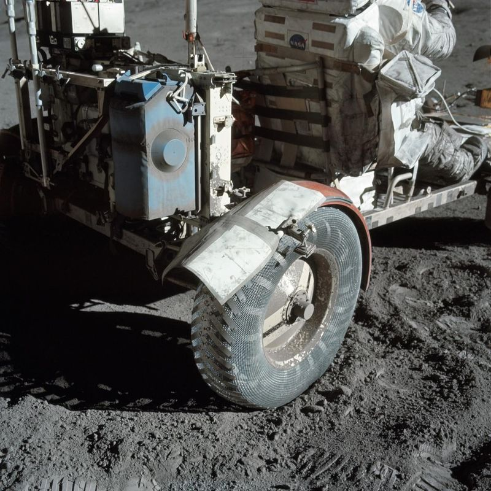
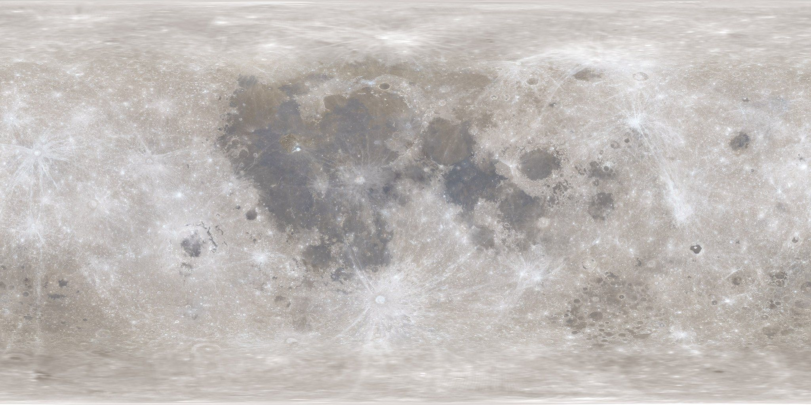

A true story · Opportunity, 2004–2019
The last goodbye
Six short scenes about one small rover, and the people on Earth who would not give up on her. It plays by itself; use the arrows to go at your own pace, or 1× 2× 3× to change the speed.
Every story can be read aloud — look for the “Read aloud” button.
An archive of the machines we left behind
Since 1958, NASA has left rovers, landers, Moon cars and science stations on other worlds — and sent probes sailing out of the solar system. Meet them, hear their “ghost logs”, and find out what they discovered.
Teacher or parent? Get the free lesson plans, worksheets and class quiz →

A true story · Opportunity, 2004–2019
Six short scenes about one small rover, and the people on Earth who would not give up on her. It plays by itself; use the arrows to go at your own pace, or 1× 2× 3× to change the speed.
Ghost Map
Every glowing marker is real hardware, placed at its true latitude and longitude. Tap one to open its dossier.

Double-click to zoom · drag to move
Ghost Logs
Short chapters written from each machine’s point of view, based on real mission data. Use the arrows or your keyboard (← →).
Up close
Built to last 90 days, she explored Mars for more than 14 years. Step through her life with her own memories of each moment, then put on the X-ray goggles and look inside her.
How it worked
Parachutes, airbags, sky cranes, crashing on purpose… Pick an animation and press play, or step through it at your own pace.
Then & now
Drag the slider (or use the arrow keys) to switch between a photo taken during the mission and a view of the same place years later.
Timeline
Scroll sideways through the decades. Colours show where each machine went.
Elsewhere in the Solar System
NASA hardware also rests on Mercury, sank into Venus, Jupiter and Saturn, circles a dwarf planet, sits on an asteroid and a comet, and some is still sailing out of the solar system. Distances for the travelling probes are estimates for today’s date, calculated from each probe’s speed.
Distance from the Sun in AU (1 AU = Earth–Sun distance, about 150 million km). Each step to the right is 10× farther.
Who am I?
Read the clue, pick the machine. Score 6 or more to earn the Archive Expert badge.
Ask the Archive
Ask anything about the machines in this archive: how they landed, what they found, where they are now, or what they'd say if they could talk.
Answers come from this site's NASA mission facts, and it works offline. Open the full chat →
From the NASA Image and Video Library
Every picture and video on this site comes from images.nasa.gov. Click any image to see it large, with its NASA ID.
Real recordings made by these machines, plus astronauts on the Moon. Sound needs air to travel, so most of space is silent. These were picked up on Mars and the Moon, or turned into sound from vibrations.
Space Exploration Mode
Spin the globes, find the beacons, and travel out to where the Voyagers are now.
NASA Eyes on the Solar System
NASA/JPL's live 3D solar system, built from real spacecraft data. Fly to Voyager 1 right now, or travel back to Cassini's last morning at Saturn.
3D Worlds · built by our teammate GuruPrasannaa Manikandan
Walk around the real landing sites on measured Moon and Mars terrain, find the hardware still sitting there, and relive two missions from launch to their last day. Each button switches into the 3D app; use “← Ghosts of Exploration” to come back.
Needs a computer or a recent phone with 3D graphics. Mars sites download about 100 MB the first time.
Explorer Passport